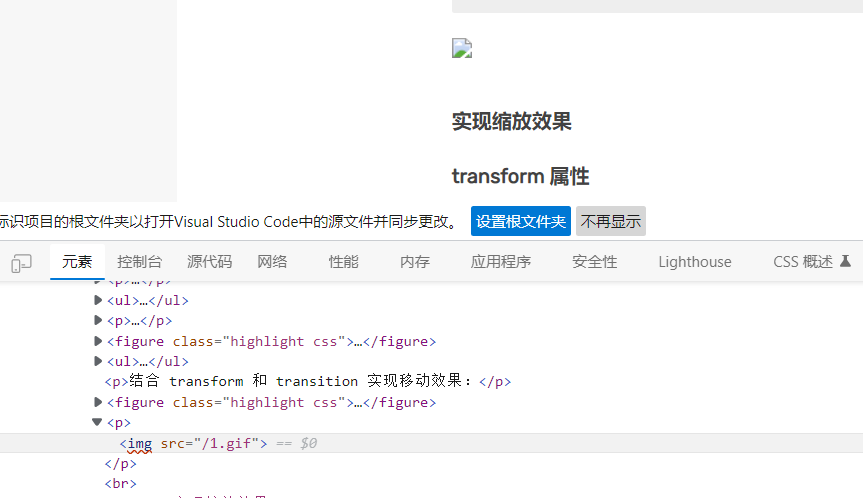
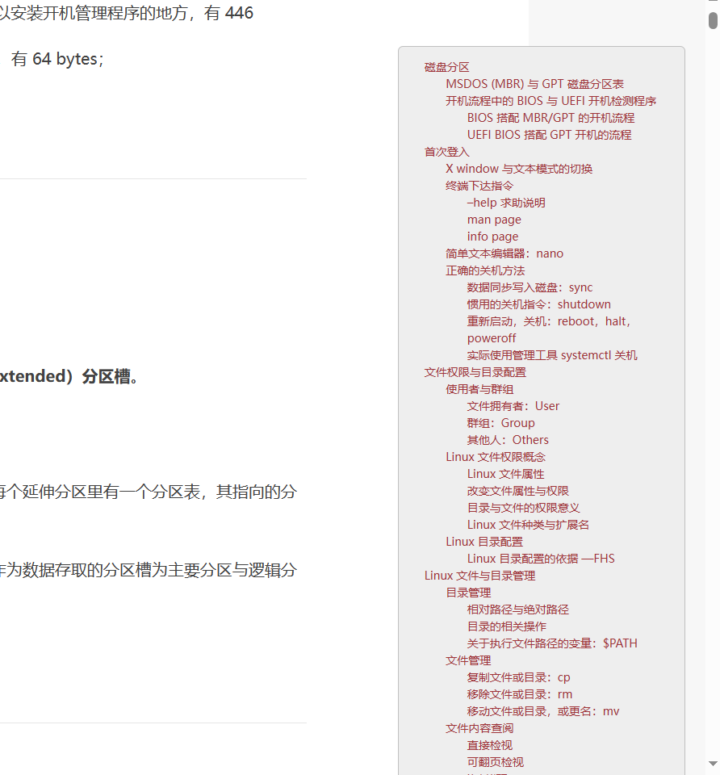

此文章属于原创，如需使用请标明出处！
hexo 应用 hacker 主题要点
图片显示问题
在更行 hexo3 后，markdown 文件中使用的相对路径在渲染的时候会强制转换为 web 上的绝对路径，导致图片无法正常显示。
为了解决这个问题，可以使用图床存放图片；在这里，启动 Asset 文件夹，渲染后图片与博客 html 页面位于同一目录下，通过配置 _config.yml 文件使图片相对路径在渲染成 html 代码时自动转化为绝对路径。
1 | post_asset_folder: true |
hexo 分类页面

1 | --- |
指定 layout 为 categories，渲染时就会使用 categories.ejs 进行渲染。
如果不添加 layout 一项，hexo 就不会按照 theme 下的layout 模板进行渲染。
excerpt
Front-matter 是文件最上方以 --- 分隔的区域，用于指定个别文件的变量，举例来说：
1 | --- |
其中 excerpt 用于设置文章摘要，描述文章大致内容。
对于文章 Front-matter 部分的内容，你在 hexo 主题的 layout 模板中，可以通过 [hexo 变量](变量 | Hexo)访问以实现不同功能。
例如，判断文章是否具有 excerpt 变量，即文章是否有摘要（是否显示文章全文）：
可以解决主页错误显示文章全文的问题。
多层分类
hexo 软件根目录下 themes\hexo-theme-hacker\layout\components 中的 categories.ejs 文件：
1 | <% if (site.categories.length){ %> |
TOC 使用滚轮
由于 Linux 学习这一篇文章过长，导致 TOC 悬浮目录无法正常显示，只能显示一部分目录；如图：
可以使用 CSS 为 TOC 的 div 添加上下滚轮（overflow-y: scroll），并设置其长度为 80%，要不然会默认全部显示使滚轮失去效用；
1 | <div id="toc" class="toc-article" style="overflow-y: scroll; height: 80%;"> |